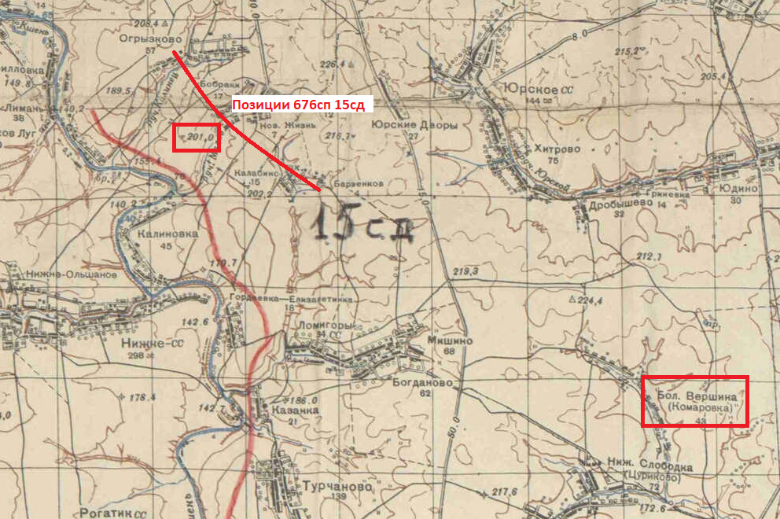

Место пленения Николая Черняева. Б. Данщина или Бол. Вершина?
1. Деревня Даньшино в Липецкой области на карте 1942 г.

2. Деревня Даньшино в Липецкой области на немецкой карте 1942 г. (см. в нижнем левом углу)

3. Деревня Бол. Вершина в Липецкой области на карте 1942 г. - вероятное место пленения Николая Черняева.
